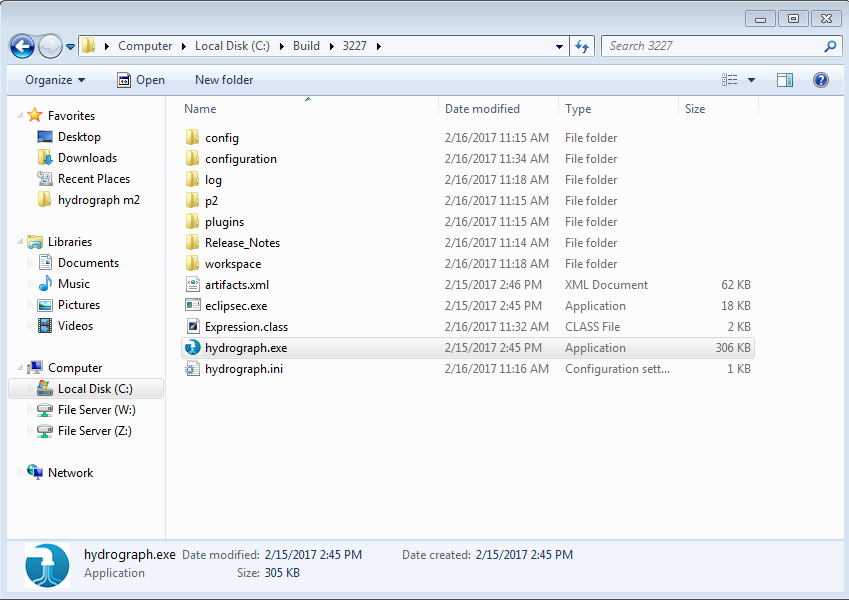
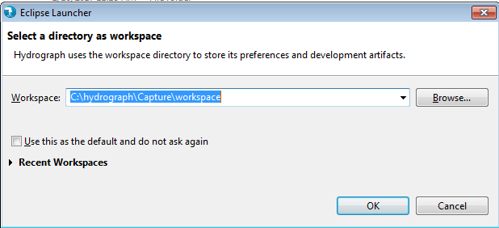

Hydrograph Help
Hydrograph Help
Launching Hydrograph on Windows
Hydrograph Release Version 1.0
Download the appropriate Hydrograph build from shared location. The downloaded folder will have directory structure like below:

Double click on eclipse.exe, Hydrograph will get launched.
